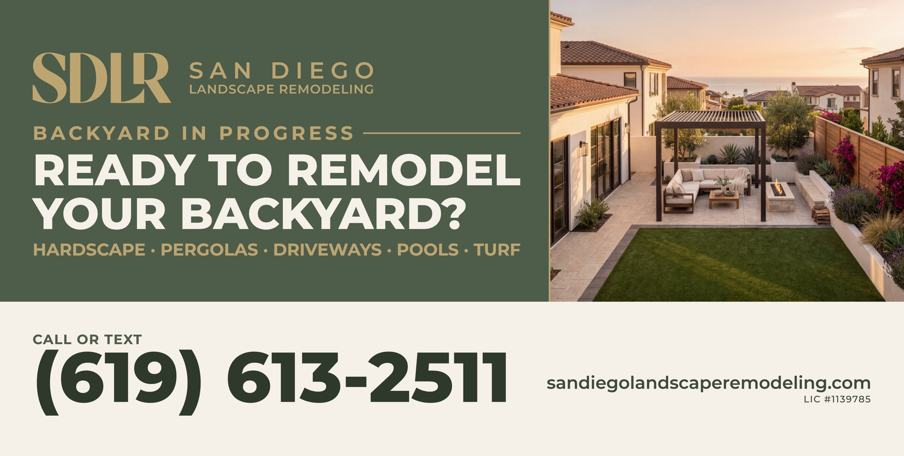
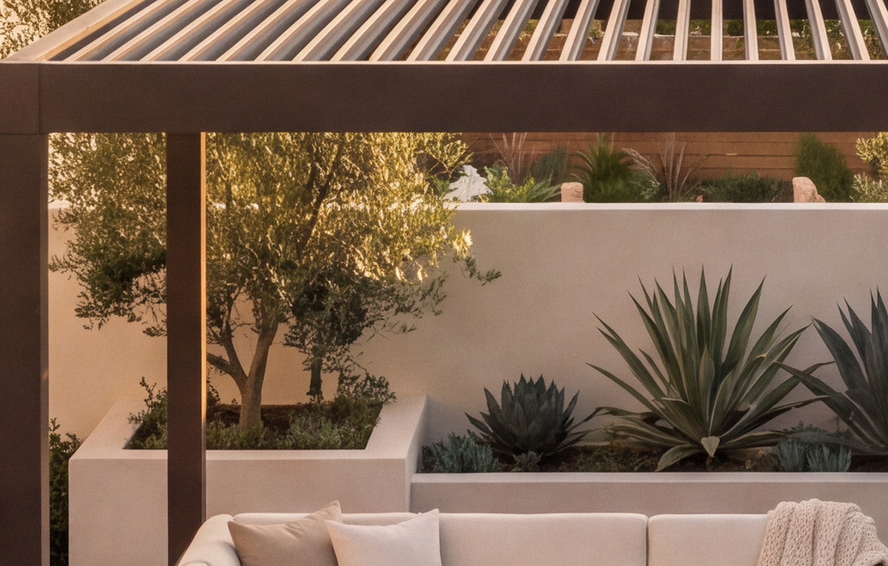
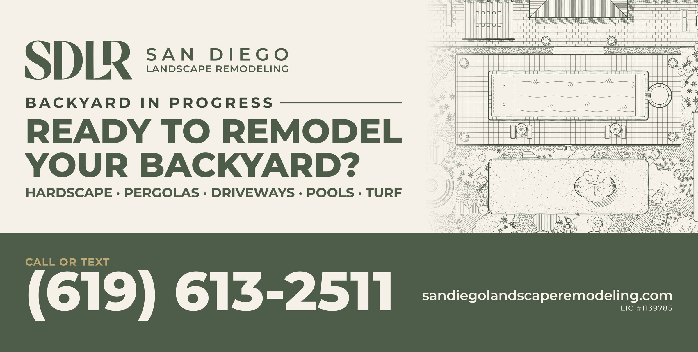
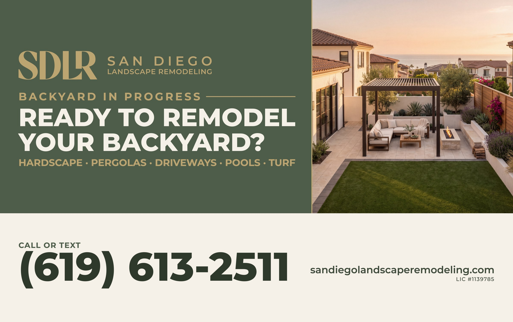
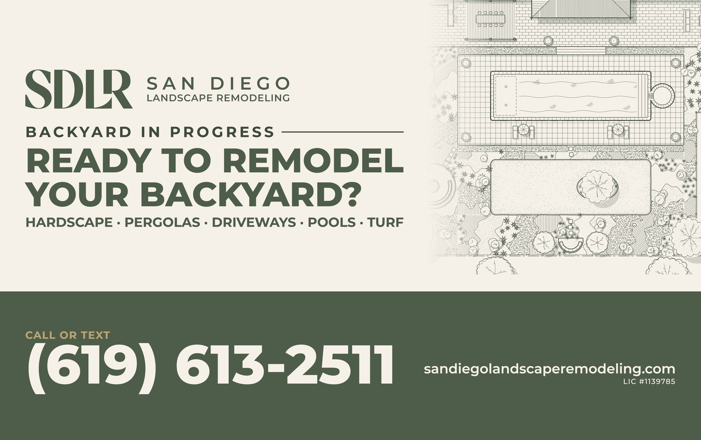

The photo version Gio leaned toward, rebuilt for the month-long La Jolla job: a new, much higher-resolution backyard that sells what we want to sell, the wider logo, and a line that tells the street we are building here right now.



| Phone number | Capital letters 5.3 in tall. Reads comfortably from about 50 ft. |
| Headline | 3.3 in. Reads from about 33 ft. |
| Backyard in progress | 1.4 in. Reads from about 14 ft. |
| Logo wordmark | The whole logo is 5.5 in tall. |
| Services, website | 1.3 in. Walking past. |
| Finished size | 96 × 48 in (8 × 4 ft). A 96 × 60 in (8 × 5 ft) version is also ready. |
| File | PDF, 97 × 49 in: 0.5 in of bleed on every side. Type and logo are vector, fonts embedded; the photo is embedded at full resolution (8688 × 7424 px). |
| Material | Mesh vinyl (wind on a fence), hemmed edges, grommets every 2 ft, zip-tied to the fence. |
| Safe area | All words at least 2.4 in inside the edge, clear of hems and grommets. |
| Colors | Sage #4E5D4A, gold #BDA572, paper #F5F1E8. No Pantone numbers yet: ask for a printed proof and check the sage does not go grey or the gold brassy. |
The 8 × 5 ft PDFs, 100 dpi PNGs, the full-size photo and the generator are in Drive under
02 Clients/san-diego-landscape-remodeling/assets/print-ready/fence-banner/.

